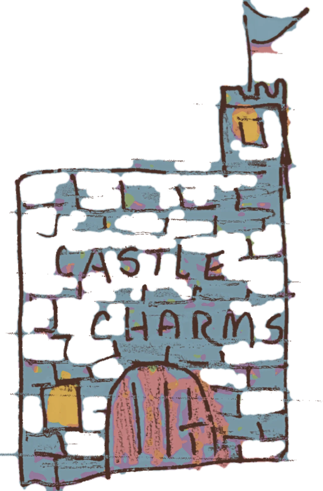

Castle Charms
Draft story, written to fill this space. Nana's own version is coming.

At the edge of Wonderland stands Castle Charms, a stone castle with one tall tower and a blue flag on top. Nobody knows who lives inside. But everyone knows what comes out.
Charms. Little squares of every color, red and green and blue and orange and purple, drift out of the tower window whenever the wind is right. They float over the fields and the tree tops, and they land wherever they please: on the pink parachute, in a cat's fur, in somebody's bag.
If you catch one, you are supposed to make a wish. If you catch two, you are supposed to give one away. And if you catch a whole bag full, you are supposed to share them at a tea party, which is what the Doormouse says, and the Doormouse would know.
The cats, Cheshire and Buster, believe the castle also makes salmon. This has never been proven.